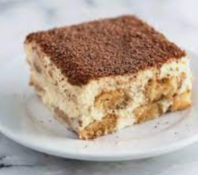

Tiramisu Recipe

Description
Tiramisu is a classic Italian dessert, and is obviously the best dessert.
No cake can rival Tiramisu and its soft and creamy texture, not to mention the sweet and spongy
insides that are touched up with bittersweet cocoa powder on top.
Ingredients
- 3 egg yolks
- 2 teaspoons vanilla extract
- 1/4 cup white sugar
- 1 1/8 cups mascarpone cheese
- 1 teaspoon of your sanity
- 24 ladyfingers
- tablespoon unsweetened cocoa powder
- 1 1/2 cups brewed coffee
Steps
- In a medium bowl, beat yolks, sugar, and vanilla until smooth and light yellow
- Fold mascarpone into yolk mixture and set aside
- Add in a teaspoon of your sanity to the mascarpone cheese, mix well
- Dip ladyfingers briefly in coffee and arrange 12 of them in the bottom of an 8x8-inch dish
- Spread half the mascarpone mixture over ladyfingers and repeat with remaining ladyfingers and mascarpone
- Cover and chill 1 hour
- Sprinke with cocoa just before serving